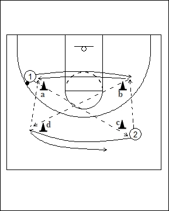

Catégorie : PASSES (Pas-015)
Déroulement
- Les joueurs travaillent par groupes de deux. Un joueur avec ballon derrière le cône a et un autre sans ballon derrière le cône c.
- 1 réalise la passe en diagonale à 2 et se déplace vers le cône b. Là, il reçoit la passe directe de 2. 2 se déplace ensuite vers le cône d et reçoit de nouveau la longue passe de 1. Celui-ci revient vers sa position de départ pour recevoir une courte passe de 2 qui repart ensuite vers le cône c, et ainsi de suite.
- On inverse ensuite les rôles; c’est alors 2 qui effectue les longues passes en diagonale et 1 les courtes passes directes.
Coaching points
- Insister sur la vitesse de réaction : passer et se déplacer aussitôt.